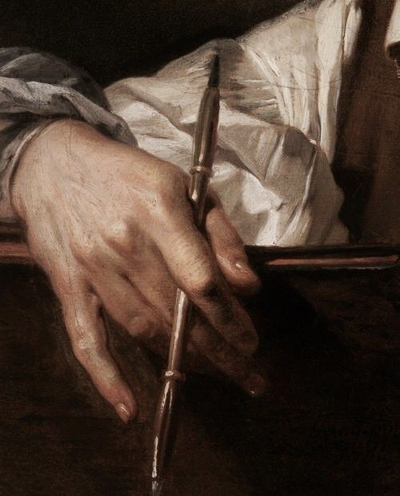
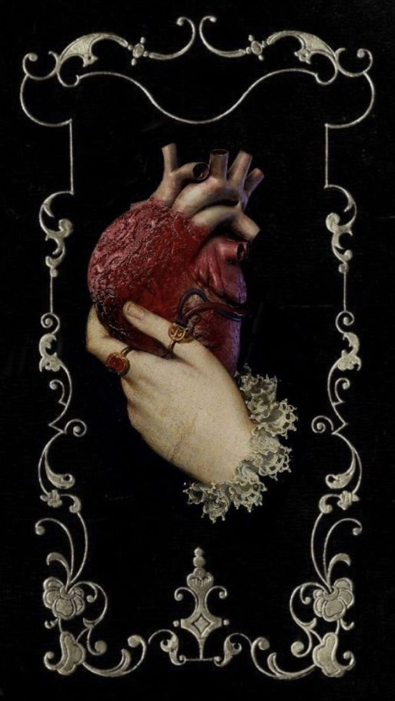
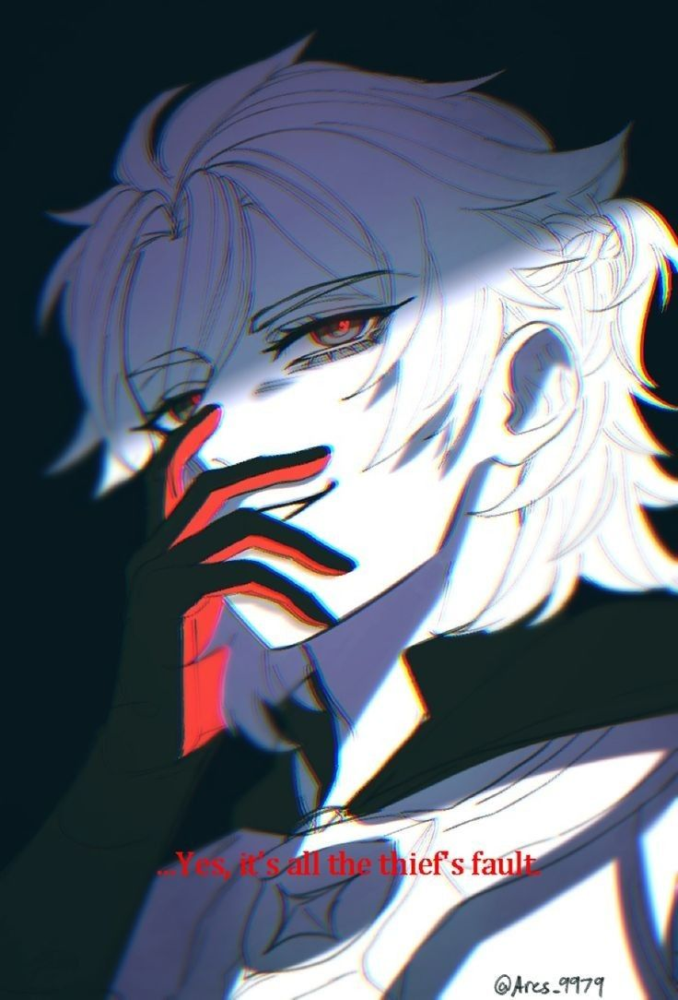

.jpg) |
⛧°.⋆༺♰༻⋆.°⛧ ♰Альбедо °.⋆༺♰༻⋆. ° ♰27 .⋆༺♰༻⋆. |
Хочеш дізнатись більше про моє ім'я? Гаразд. В алхімії Альбедо використовується для визначення другого етапу створення Філософського каменю. Ця реакція бере початок в нігредо. Темній ніч душі, близької по значенню до смерті та хаосу. Алхіміки очищають даний стан до абсолютної білизни, приносячи світло та ясність. Ніби змивають всі недоліки. Саме це вони називають Альбедо. |

 |
A - Алхімія, що так глибоко засіла в життя хлопця. Алхімія — захоплення його людської особистості на яке той витратив більшу частину свого існування. Дещо складне, комплексне але в результаті прекрасне. |
|
l - людяність, характеристика яка дана доволі малій частині неземних створінь. Хоча подекують, людяності монстри не наділені взагалі. Їх природа вбивати та рвати заради виживання, заради хаосу. Більшість не захочуть освоювати дану характеристику навіть при людському тілі. Лиш но ті кому люди здались цікавими здатні виявити бажання до контролю власної хижої натури. |
.jpg) |
 |
b - білий, колір котрий побачили його очі з самого народження та протягом життя. Колір полум'я при його народженні, та колір крейди. Крейди котра сиплеться з його тіла після кожного експерименту. Символізує чистоту, невинність та мисливську відвагу. Хоча деякі все ж асоціюють його з смертю. І хто ж з цих осіб більш ближчий до відповіді? |
|
e - екземпляри, в чоловіка багатенько різних предметів для дослідів. Все щоб задовільнити його дослідницький характер. Якщо потрібно буде більше кісток - він дістане кістки, якщо покалічити себе чи оточуючих заради цікавого експерименту - він це зробить. Хто зна, що зможе його зупинити окрім власного бажання. |
 |
 |
d - довіра, те що тяжко вибороти але легко втратити. Хлопець давно зарубив собі на носі, якщо він бажає втертись "колегам" в довіру той має обережно висказуватись щодо емоційності тих. Чи стали ви б довіряти особі яка різко з'явилась у вашому житті? Наврядчи, проте віруючі люди легко довіряють послідовникам так званого "Бога". Такі дурні створіння. |
|
o - обережність, не дивлячись на свою невгамовну до дослідів натуру з екземплярами він поводиться доволі обережно та дбайливо. Незалежно від того чи екземпляр жива істота чи просто предмет. |
 |

|
В людській формі завжди важливо здаватись добрим та відповіданим, не настільки добрим щоб прийняти монстра але допомагати іншим людям. Не важливо кому з них, будь то вбивцею чи простим селяком, кожному потрібна допомога. Це ж ви мали на увазі, командире? —"Ми живемо посеред апокаліпсису, тож важливо допомагати всім в обсязі власних можливостей. Зрозумів, Альбедо?" —"Зрозумів, командире." Всі старші люди очікуватимуть від тебе постійної чесності, щоб жодна брехня не проскакувала повз твоїх губ. Терпіння, не важливо що наговорять тобі твої колеги. Ти постійно маєш тихенько вислуховувати та кивати. Їм не зручна правда коли це стосується агресивної поведінки щодо тебе. |
|
—"Альбедо, сину мій. Твоя душа наповнена жорстокістю та ненавистю до нас." —"Проте прощу, попіклуйся про свою сестру коли ми помремо." —*Від чужої сторони не було нічого окрім холодного кивка.* —*В батька на губах зросла усмішка, здається він задоволений його реакцією.* Батьку, я попіклувався про сестру як ти і просив. Тепер вона навіки в безпеці. Ти був хворою людиною, приймаючою до себе монстрів та навчаючи їх людських характеристик. В надії, що одного дня ми перестанемо вбивати. Та рано чи пізно це й погубило твою грішну душу. Спочивай з миром, старце. |
 |

 |
Янгольській подобі парубка десь до п'ятисот років, лиш до людська стабільно тримається коло віку 27. Серед людиноподібних виділяється золотистою зірочкою на шиї, дивною проте цікавенькою. Здавалось, такої ознаки можна лиш цуратись та хлопець напроти дуже яскраво її висвітлює. Дуже рідко одягаючи гольфи або інші елементи, що закривають шию. На прохолодну погоду можна помітити у деякому плащі кавового відтінку. Образ з першого на сторінці арта. |

|
Альбедо — павший янгол. Покинуте богами створіння, втративше сенс будь якої віри. Та все ж бажаючої "врятувати" людство. |
 |
A - Амбіції, як легко втратити себе по дорозі до цілі? Зазвичай легко, даний світ не щадить амбіції власних жителів. Стираючи їх в попіл, або затикаючи саму причину цілі. Та чи може затикання цих людей бути головною амбіцією якоїсь особистості? Можливо. Всередині холодного тіла палає ненависть до людей, презирство їх роду. Бажання винищити всіх до одного. |
|
l - лікоріс, квітка яскраво червоного забарвлення. Її можна часто побачити в волоссі чи на одежі парубка. Пелюстки доволі вузькі та загнуті назад, з доволі довгими тичинками котрі можуть сягати 20 см. Через що дану квітку прозвали променистою. Стеблі зазвичай зростають заввишки 45-60 см та мають по 5-7 яскраво червоних цвітів. Серед людей прозвана квіткою померлих, символізуючи смерть. |
 |
 |
b - божевілля, крихке скло що з гучним звуком полетіло на підлогу. Реальність стає все більше розпливчастою в блакитних очах. Його розум вже геть не розрізняє картинку в спогадах від реальності. Він не може пригадати. Доки руки тягнуться до підлоги, тіло труситься. Картина в очах потроху пливе, лише шкіра відчуває невелику біль від контакту з гострим склом. Та легке відчуття вологи, рідина з колби пролилась на підлогу. |
|
e - естрим, люди зазвичай дуже цінять власне життя. Одиниці лиш наважуються гратись з власним життям у рулетку. Та чим відрізняється людське тіло від монстра? Колеги Альбедо часто спостерігали на його тілі порізи, закривавлені ділянки чи хімічні опіки. Котрі опісля слів Алхіміка про їх несерйозність, з часом безслідно зникали. Лиш старець бачив ділянки позбавлені шкіри, холодні органи та відрізані кінцівки. |
 |
|  |
d - двійник, раніше в цьому світі було два Альбедо, під різним іменем проте з майже ідентичною зовнішністю. Одного дня, при заході сонця клона з вогняними очима знайшли порваним на шматочки. Позбавленим всіх органів, включаючи очі. При місячному світлі труп став перетворюватись у перевертня. |
|
o - омана, під маскою зосередженого та геніального алхіміка ховається дещо безбожне. Його бездушна та холодна до мурашок по шкірі неземна натура. Наче дещо вкрай звірське проте на вигляд янгольське. Чим же нагрішив людський народ, що послав на себе таких створінь? Бути роздертим на кусочки, чи єдине їх спасіння? Б0ж% п0с^u с`!с%н№я.. |
Кредіти:
@amusation on inst |
@drosaxx on tw |
@m_iothle on tw |
@telamii_ on tw |
@elodeas on tw |
@usurai on tw |
юз: @Helluvagod